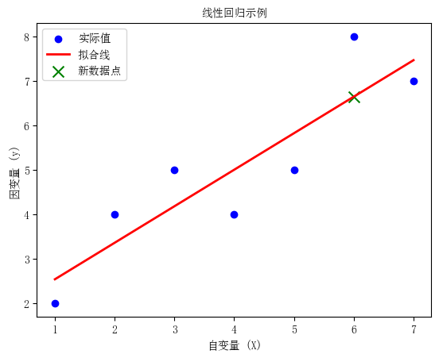
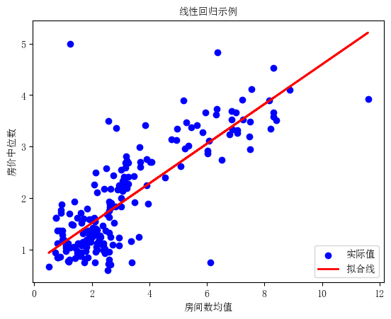
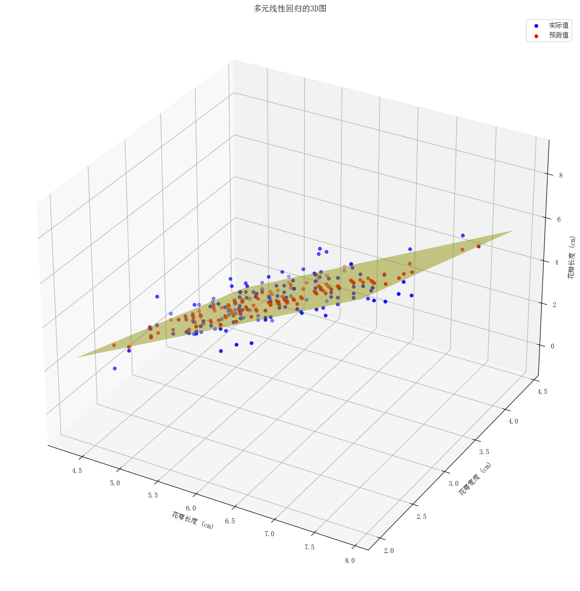
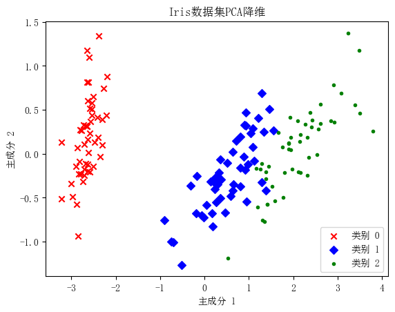
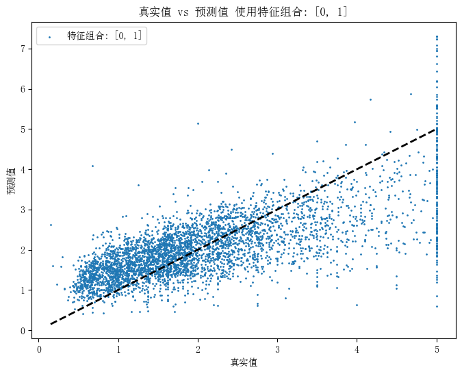
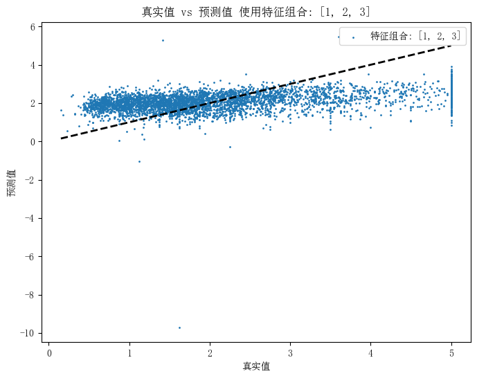
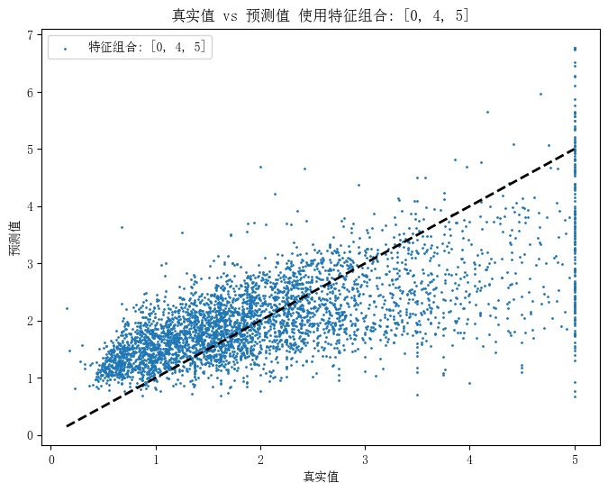
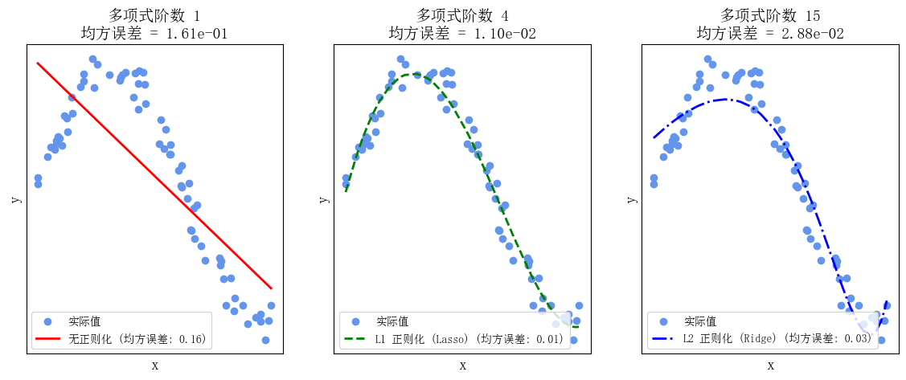
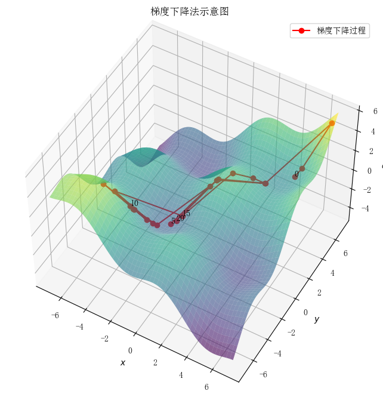

机器学习概论
机器学习概论
本文章将把机器学习大致内容梳理一遍，可以快速了解机器学习的大致框架及大致内容。
一、线性回归
1.线性回归模型的基本原理和假设
线性回归是⼀种⼴泛⽤于统计学和机器学习中的回归分析⽅法，⽤于建⽴⾃变量（特征）与因变量（⽬标）之间的 线性关系模型。线性回归的基本原理是寻找⼀条直线（或者在多维情况下是⼀个超平⾯），以最佳地拟合训练数 据，使得模型的预测与真实观测值之间的误差最⼩化。下⾯我们来详细解释线性回归的基本原理和假设。
简单线性回归模型： \[ y=b_0+b_1\cdot x \] 多元线性回归模型： \[ y=b_0+b_1\cdot x_1+b_2\cdot x_2+\ldots+b_p\cdot x_p \]
其中：
- \(y\)是因变量 (需要预测的值)。
- \(x_1, x_2, \ldots , x_p\)是自变量 (特征),可以是一个或多个。
- \(b_0\)是截距(模型在自变量都为0时的预测值)。
- \(b_1,b_2,\ldots,b_p\)是回归系数，表示自变量对因变量的影响程度。
最优解
Actual value: 真实值,即已知的Predicted value:预测值，是把已知的x带入到公式里面和猜出来的参数a,b计算得到的Error:误差，预测值和真实值的差距最优解：尽可能的找到一个模型使得整体的误差最小，整体的误差通常叫做损失LossLoss:整体的误差，loss通过损失函数Ioss function计算得到
线性回归的目标是找到合适的回归系数\(b_0,b_1,\ldots,b_p\),以最小化模型的预测误差。通常采用最小二乘法来估计这 些系数，即使得观测值与模型预测值之间的残差平方和最小。
线性回归模型的有效性基于以下⼀些关键假设：
- 线性关系假设：线性回归假设因变量和自变量之间存在线性关系。这意味着模型试图用一条直线(或超平面)来拟合数据，以描述自变量与因变量之间的关系。
- 独立性假设：线性回归假设每个观测值之间是相互独立的。这意味看一个观测值的误差不受其他观测值的影响。
- 常数方差假设：线性回归假设在自变量的每个取值点上，观测值的误差方差都是常数。这被称为同方差性或等方差性。
- 正态性假设：线性回归假设观测值的误差服从正态分布。这意味着在不同自变量取值点上的误差应该接近正态分布。
如果这些假设不满⾜，线性回归模型的结果可能不可靠。
⼀个简单示例：
| \(y\) | 2 | 4 | 5 | 4 | 5 | 8 | 7 |
|---|---|---|---|---|---|---|---|
| \(x\) | 1 | 2 | 3 | 4 | 5 | 6 | 7 |
import numpy as np |
回归系数 (b1): [0.82142857]
截距 (b0): 1.7142857142857149
新数据点的预测值: [6.64285714]
2.参数估计
使用最小二乘法求解线性回归模型的参数通常包括以下步骤：
- 定义模型：首先，需要定义线性回归模型的数学形式，即\[Y=\beta_0+\beta_1X_1+\beta_2X_2+\ldots+\beta_nX_n+\epsilon\]其 中\(Y\)是因变量，\(X_1,X_2,\ldots,X_n\)是自变量，\(\beta_0,\beta_1,\ldots,\beta_n\)是模型的参数，\(\epsilon\)是误差项。
- 确定损失函数：损失函数是用来衡量模型预测值与实际观测值之间的差异的函数。在最小二乘法中，通常使 用残差平方和作为损失函数。
- 最小化损失函数：使用优化算法 (通常是梯度下降法或闭式解)来最小化损失函数。在最小二乘法中，要找 到使得残差平方和最小的参数值。对于线性回归模型，可以通过求解以下正规方程来得
到闭式解： \[ \beta=(X^TX)^{-1}X^TY \] 其中\(X\)是自变量的设计矩阵，\(Y\) 是因变量的观测值，\(\beta\) 是参数向量。
最小二乘法的原理
在线性回归中, 我们假设自变量 \(x\) 和因变量 \(y\) 之间存在线性关系, 可以用以下模型表示： \[ y=\beta_0+\beta_1 \cdot x+\varepsilon \]
其中: - \(y\) 是因变量（需要预测的值）。 - \(x\) 是自变量（特征）。 - \(\beta_0\) 是截距（模型在自变量为 0 时的预测值）。 - \(\beta_1\) 是斜率（自变量 \(x\) 对因变量 \(y\) 的影响程度）。 - \(\varepsilon\) 是误差项, 表示模型无法完美拟合真实数据的部分。
最小二乘法的目标是找到最佳的 \(\beta_0\) 和 \(\beta_1\), 使得观测值 \(y_i\) 和对应的模型预测值 \(\hat{y}_i\) 之间的残差（差值）的平方和最小化: \[ \min _{\beta_0, \beta_1} \sum_{i=1}^n\left(y_i-\hat{y}_i\right)^2 \] 其中, \(n\) 是样本数量, \(\hat{y}_i\) 是根据模型预测的值。 最小二乘法的公式
最小二乘法可以通过以下公式来估计参数 \(\beta_0\) 和 \(\beta_1\) : \[ \begin{aligned} \beta_1 &= \frac{\sum_{i=1}^n\left(x_i-\bar{x}\right)\left(y_i-\bar{y}\right)}{\sum_{i=1}^n\left(x_i-\bar{x}\right)^2} \\ \beta_0 &= \bar{y}-\beta_1 \cdot \bar{x} \end{aligned} \]
其中, \(\bar{x}\) 和 \(\bar{y}\) 分别是自变量 \(x\) 和因变量 \(y\) 的均值。
最⼩⼆乘法的代码示例 使用常见的线性回归数据集加州房价数据集。
import numpy as np |
斜率 (beta_1): 0.3849371126330091
截距 (beta_0): 0.7464519437859625
代码中, 使用Scikit-Learn的 LinearRegression
类来创建并拟合线性回归模型。 最小二乘法的原理被内部自动应用,
从而估计出最佳的回归系数 \(\beta_0\) 和
\(\beta_1\)
。这些系数将用于构建最佳拟合线性模型,
以最小化观测值和模型预测值之间的残差平方和。
3.评估指标
在进⾏参数估计后，通常需要对估计结果进⾏评价，以确保模型的可靠性和有效性。
评价参数估计的常用方法包括: -
残差分析：分析残差的分布和模式，检验模型的拟合效果和误差项的假设是否成立。
- 参数显著性检验：使用统计检验方法（如t检验）来检验参数估计的显著性,
判断自变量与因变量之间是否存在显著的线性关系。 -
模型拟合度评估：使用拟合度指标（如R-squared、调整R-squared等）来评估模型的拟合程度,
判断模型对数据的解释能力。
参数估计决定了模型对数据的拟合程度和预测能力。通过最小二乘法, 可以有效地估计模型的参数, 并通过各种评价方法来验证模型的有效性。然而, 在应用中需要注意参数估计的局限性, 并结合实际情况进行适当的调整和处理, 确保模型的准确性和可靠性。
用于评估模型性能的指标包括: - 均方误差（Mean Squared Error, MSE） - 均方根误差（Root Mean Squared Error, RMSE) - 平均绝对误差 (Mean Absolute Error, MAE) 等
评估指标是用来衡量模型预测结果与真实观测值之间的差异程度，从而评估模型的性能。 在线性回归中, 常用的评估指标包括均方误差（MSE）、均方根误差（RMSE）和平均绝对误差（MAE）。
均方误差 (MSE)
均方误差是预测值与真实值之间差异的平方的平均值： \[ M S E=\frac{1}{n} \sum_{i=1}^n\left(y_i-\hat{y}_i\right)^2 \]
其中: - \(n\) 是样本数量; - \(y_i\) 是第 \(i\) 个观测值的真实值; - \(\hat{y}_i\) 是第 \(i\) 个观测值的预测值。
均方根误差（RMSE）
均方根误差是均方误差的平方根, 用来衡量预测值与真实值之间的平均偏差: \[ R M S E=\sqrt{M S E}=\sqrt{\frac{1}{n} \sum_{i=1}^n\left(y_i-\hat{y}_i\right)^2} \]
平均绝对误差 (MAE)
平均绝对误差是预测值与真实值之间差异的绝对值的平均值:
\[ M A E=\frac{1}{n} \sum_{i=1}^n\left|y_i-\hat{y}_i\right| \]
上述举例的方误差（MSE）、均方根误差（RMSE）和平均绝对误差（MAE）计算：
# 预测值 |
均方误差 (MSE): 0.36395228249940537
均方根误差 (RMSE): 0.603284578370279
平均绝对误差 (MAE): 0.4390690780172787推导过程
这些评估指标的推导过程可以通过最小化某些损失函数来实现。以均方误差为例, 可以通过最小化残差平方和来得到参数的估计值。
具体地, 在线性回归中, 的目标是最小化残差平方和: \[ \text { Residual Sum of Squares (RSS) }=\sum_{i=1}^n\left(y_i-\hat{y}_i\right)^2 \]
其中 \(y_i\) 是真实值, \(\hat{y}_i\) 是预测值。通过最小化 RSS，可以得到最优的模型参数估计值。
应用场景
- 均方误差（MSE）：适用于评估模型对异常值的敏感程度。由于MSE计算了预测值与真实值之间的平方差,因此对大的误差给予较大的惩罚, 使得模型更加关注这些大误差, 适用于需要关注所有预测误差的场景。
- 均方根误差（RMSE）：将均方误差进行平方根处理后得到的指标, 具有与原始数据相同的量纲, 更直观地反映了预测值与真实值的平均偏差, 常用于解释模型的预测误差的平均水平。
- 平均绝对误差 (MAE) : 对预测值与真实值之间的绝对差值进行求平均, 不考虑差值的正负, 因此更加稳健, 不受异常值的影响, 适用于对异常值敏感的场景。
总的来说, 均方误差、均方根误差和平均绝对误差都是常用的评估指标, 各有优缺点, 实际情况中, 要选择合适的指标来评估模型的性能。
R平方（R-squared）
\(\mathrm{R}\) 平方是一个介于 0 和 1 之间的值, 用来衡量线性回归模型对观测数据的拟合程度。它表示因变量（目标变量）的变异程度中有多少能够被自变量（特征）解释。 \(\mathrm{R}\) 平方的计算公式: \[ R^2=1-\frac{\sum_{i=1}^n\left(y_i-\hat{y}_i\right)^2}{\sum_{i=1}^n\left(y_i-\bar{y}\right)^2} \]
其中: - \(y_i\) 是第 \(i\) 个观测值的真实值（因变量的实际值）。 - \(\hat{y}_i\) 是模型预测的值, 即根据回归模型估计得出的值。 - \(\bar{y}\) 是因变量 \(y\) 的均值。 \(R\) 平方的取值范围为 0 到 1 , 当 \(R\) 平方接近 1 时, 表示模型能够很好地解释因变量的变异性, 拟合优度较高。当 \(R\) 平方接近 0 时, 表示模型对因变量的解释力较差, 拟合优度较低。
调整后的R平方（Adjusted R-squared）
调整后的R平方是对 \(R\) 平方的一种修正, 考虑了自变量的数量。它用于避免过度拟合问题, 因为增加自变量可能会导致R平方增加, 但也不一定意味着模型更好。
调整后的R平方的计算公式: \[ \text { Adjusted } R^2=1-\frac{\left(1-R^2\right)(n-1)}{n-p-1} \]
其中: - \(R^2\) 是未经调整的 \(\mathrm{R}\) 平方。 - \(n\) 是样本数量。 - \(p\) 是自变量的数量。
调整后的 \(R\) 平方通常小于未经调整的 \(R\) 平方, 因为它考虑了自变量数量的惩罚。当模型中的自变量不增加解释力时, 调整后的 \(R\) 平方值较低。
含义总结： - R平方 表示模型对因变量变异性的解释程度, 数值范围在0到1之间。较高的R平方表示较好的拟合优度, 但高R平方并不一定代表模型的可靠性。 - 调整后的R平方 在R平方的基础上进行修正, 考虑了自变量数量。它通常小于未经调整的R平方, 用于避免过度拟合问题。更高的调整后的R平方表示模型更可靠, 尤其在自变量较多时, 对模型的评估更有帮助。
总而言之, \(R\) 平方和调整后的 \(R\) 平方是用于评估线性回归模型拟合优度的重要指标, 可以帮助我们了解模型对数据的解释力和可靠性。
上述举例的R-squared、Adjusted R-squared计算代码如下：
from sklearn.metrics import r2_score |
决定系数 (R²): 0.6366981026928232
调整决定系数 (Adjusted R²): 0.6348632446256153上述举例为简单线性回归模型，现在对多元线性回归模型进行说明。
4.多元线性回归
多元线性回归是一种扩展了简单线性回归的模型，在考虑多个自变量的情况下建立与因变量之间的线性关系。
公式推导
多元线性回归模型的数学表达式为: \[ y=\beta_0+\beta_1 x_1+\beta_2 x_2+\ldots+\beta_r x_r+\epsilon \]
其中: - \(y\) 是因变量（要预测的变量）; - \(x_1, x_2, \ldots, x_r\) 是自变量（特征或解释变量）; - \(\beta_0\) 是截距（模型的偏置）; - \(\beta_1, \beta_2, \ldots, \beta_r\) 是自变量的系数（模型的斜率）; - \(\epsilon\) 是误差项, 表示模型无法解释的随机误差。
参数估计过程
为了估计多元线性回归模型的参数，可以使用最小二乘法。首先, 将模型的公式写成矩阵形式: \[ Y=X \beta+\epsilon \]
其中: - \(Y\) 是因变量的观测值 \((n \times 1\) 的列向量 \()\); - \(X\) 是自变量的设计矩阵 \((n \times(r+1)\) 的矩阵）, 其中第一列是全1向量, 用来对应截距项; - \(\beta\) 是参数向量 \(((r+1) \times 1\) 的列向量 \()\); - \(\epsilon\) 是误差项 \((n \times 1\) 的列向量）。
接下来, 的目标是最小化残差平方和 \(\sum_{i=1}^n \epsilon_i^2\) 。将残差向量表示为 \(\epsilon=Y-X \beta\), 可以得到最小二乘估计为: \[ \hat{\beta}=\left(X^T X\right)^{-1} X^T Y \]
下面进行代码举例：
使用Iris数据集的前两个特征进行回归，并将第三个特征作为因变量。
- 蓝色点表示实际数据。 - 红色点表示模型预测的数据。 -
黄色平面表示回归模型拟合的平面。
import numpy as np |
均方误差 (MSE): 0.40957831218050467
均方根误差 (RMSE): 0.6399830561667275
平均绝对误差 (MAE): 0.5162246726456129
决定系数 (R²): 0.8676860089345194
调整决定系数 (Adjusted R²): 0.865885818579887
5.特征选择
特征选择可以帮助从⼤量的⾃变量中挑选出最具影响⼒的变量，以提⾼模型的预测性能、减少过拟合的⻛险并简 化模型的解释。 ### 多重共线性（Multicollinearity） 多重共线性是指⾃变量之间存在⾼度相关性或线性依赖关系的情况。
多重共线性可能会导致以下问题 1. 不稳定的估计：多重共线性会导致回归系数估计变得不稳定。这意味着⼩的数据变动或微⼩的变量选择变化都可能导致回归系数的⼤幅度变化，使得参数估计不可靠。 2. 难以解释效果：多重共线性使得很难分离各⾃⾃变量对因变量的独⽴效应，因为它们之间的效应不再明确。这会降低模型的解释能⼒。 3. 统计检验不准确：多重共线性会导致回归模型的统计检验不准确，如t检验和F检验。这可能会导致错误的结论，例如错误地认为某些⾃变量对因变量没有显著影响。 4. 过度拟合：多重共线性可以导致过度拟合，因为模型可能会在⾃变量之间寻找微⼩的变化，从⽽试图解释由于共线性引起的噪声。
检测多重共线性 1. 相关系数分析：通过计算⾃变量之间的相关系数矩阵，可以初步了解⾃变量之间是否存在⾼度相关性。相关系数接近于1表示⾼度相关。 2. ⽅差膨胀因⼦（VIF）：VIF⽤于衡量每个⾃变量与其他⾃变量的相关性程度。VIF越⼤，表示共线性越严重。通常，VIF⼤于10或更⾼的⾃变量可能需要考虑去除或合并。 3. 主成分分析（PCA）：PCA可以将相关的⾃变量合并成新的⽆关⾃变量，从⽽减少共线性的影响。但这会导致模型的解释变得更加复杂。 4. 逐步回归：逐步回归⽅法允许逐渐添加或删除⾃变量，以找到最佳模型。在逐步回归中，会考虑每个⾃变量的贡献，从⽽减少共线性引起的问题。 5. 合并⾃变量：如果多个⾃变量之间⾼度相关，可以考虑将它们合并成⼀个新的⾃变量或使⽤其平均值来代替。这样可以减少模型中的共线性。
下面我们使用Iris的4个特征作为自变量、种类作为因变量进行多重共线性分析。
import numpy as np |
相关系数矩阵：
sepal length (cm) sepal width (cm) petal length (cm) \
sepal length (cm) 1.000000 -0.117570 0.871754
sepal width (cm) -0.117570 1.000000 -0.428440
petal length (cm) 0.871754 -0.428440 1.000000
petal width (cm) 0.817941 -0.366126 0.962865
petal width (cm)
sepal length (cm) 0.817941
sepal width (cm) -0.366126
petal length (cm) 0.962865
petal width (cm) 1.000000 ⽅差膨胀因⼦（VIF）
from statsmodels.stats.outliers_influence import variance_inflation_factor |
方差膨胀因子（VIF）：
特征 VIF
0 sepal length (cm) 262.969348
1 sepal width (cm) 96.353292
2 petal length (cm) 172.960962
3 petal width (cm) 55.502060主成分分析（PCA）
- 数据标准化和中心化
# 对每个特征求平均值 |
特征均值： [5.84333333 3.05733333 3.758 1.19933333]
中心化后的数据：
[[-0.74333333 0.44266667 -2.358 -0.99933333]
[-0.94333333 -0.05733333 -2.358 -0.99933333]
[-1.14333333 0.14266667 -2.458 -0.99933333]
[-1.24333333 0.04266667 -2.258 -0.99933333]
[-0.84333333 0.54266667 -2.358 -0.99933333]]- 计算协方差矩阵
# 计算协方差矩阵 |
协方差矩阵：
[[ 0.68569351 -0.042434 1.27431544 0.51627069]
[-0.042434 0.18997942 -0.32965638 -0.12163937]
[ 1.27431544 -0.32965638 3.11627785 1.2956094 ]
[ 0.51627069 -0.12163937 1.2956094 0.58100626]]- 计算特征值和特征向量
# 计算协方差矩阵的特征值和特征向量 |
特征值：
[4.22824171 0.24267075 0.0782095 0.02383509]
特征向量：
[[ 0.36138659 -0.65658877 -0.58202985 0.31548719]
[-0.08452251 -0.73016143 0.59791083 -0.3197231 ]
[ 0.85667061 0.17337266 0.07623608 -0.47983899]
[ 0.3582892 0.07548102 0.54583143 0.75365743]]- 选择主成分和投影矩阵
# 对特征值按照降序排列，并选择前两个主成分 |
选择的特征向量（投影矩阵）：
[[ 0.36138659 -0.65658877]
[-0.08452251 -0.73016143]
[ 0.85667061 0.17337266]
[ 0.3582892 0.07548102]]- 求出降维后的数据
# 根据投影矩阵求出降维后的数据 |
降维后的数据：
[[-2.68412563 -0.31939725]
[-2.71414169 0.17700123]
[-2.88899057 0.14494943]
[-2.74534286 0.31829898]
[-2.72871654 -0.32675451]]也可直接使用Scikit-Learn
from sklearn.decomposition import PCA |
主成分分析结果：
[[-2.68412563 0.31939725]
[-2.71414169 -0.17700123]
[-2.88899057 -0.14494943]
[-2.74534286 -0.31829898]
[-2.72871654 0.32675451]]数据本身是4维的，降维后为2维
import matplotlib.pyplot as plt |

通过观察图中不同颜色点的分布，可以发现： - Iris-setosa (类别 0 ) 与其他两类在降维后的空间中分布较为独立，显示出明显的分离。 - Iris-versicolor (类别1) 和Iris-virginica (类别2) 有部分重叠，表明这两类在原始特征空间中的某些属性比较接近。
下面使用加州房价数据集进行再一次尝试。 使用不同的特征组合进行比较。
import numpy as np |
使用所有特征的MSE: 0.5558915986952422



使用特征组合 [0, 1] 的MSE: 0.6629874283048177
使用特征组合 [1, 2, 3] 的MSE: 1.1293479456543194
使用特征组合 [2, 3, 4] 的MSE: 1.1724183557562893
使用特征组合 [0, 4, 5] 的MSE: 0.7070316559271143from sklearn.decomposition import PCA |
主成分分析结果：
[[-1.10351265e+03 8.56663624e+00 -7.74104267e-01]
[ 9.75541244e+02 -4.67041774e+00 -1.02568060e+00]
[-9.29549908e+02 2.00346509e+01 -1.97273701e+00]
[-8.67550048e+02 2.03314414e+01 -2.31492872e+00]
[-8.60550411e+02 2.03288266e+01 -2.69515779e+00]]# 计算VIF |
方差膨胀因子（VIF）：
特征 VIF
0 MedInc 11.511140
1 HouseAge 7.195917
2 AveRooms 45.993601
3 AveBedrms 43.590314
4 Population 2.935745
5 AveOccup 1.095243
6 Latitude 559.874071
7 Longitude 633.7116546.正则化技术
正则化技术在机器学习中被广泛应用于控制模型的复杂度, 避免过拟合问题。L1正则化（也称为Lasso回归）和L2 正则化（也称为岭回归）是常用的正则化方法, 它们分别通过添加L1范数和L2范数的惩罚项来限制模型参数的大小。
L1正则化（Lasso回归）
L1正则化通过添加参数向量的L1范数作为惩罚项, 其优化目标可以表示为: \[ \operatorname{minimize} \quad \mathrm{MSE}+\lambda \sum_{j=1}^p\left|\beta_j\right| \]
其中, MSE 是均方误差（Mean Squared Error）， \(\lambda\) 是正则化参数, 控制正则化项的影响力, 较⼤的 \(\lambda\) 值会导致更多的系数变为零，\(\beta_j\) 是模型的第 \(j\)个参数。
L2正则化（岭回归）
L2正则化通过添加参数向量的L2范数的平方作为惩罚项, 其优化目标可以表示为: \[ \operatorname{minimize} \quad \mathrm{MSE}+\lambda \sum_{j=1}^p \beta_j^2 \]
其中, MSE 是均方误差（Mean Squared Error）， \(\lambda\) 是正则化参数, 控制正则化项的影响力, 较⼤的 \(\lambda\) 值会导致系数趋向于零，\(\beta_j\) 是模型的第 \(j\)个参数。
下面举例使用一个多项式函数作为目标函数, 然后分别演示不使用正则化、使用L1正则化 （Lasso回归）和使用L2正则化（Ridge回归）的情况。
代码中, 生成一个具有噪声的多项式数据集, 并拟合三种不同类型的模型。
最后，绘制一个拟合曲线以及观察它们之间的差异。
import numpy as np |

Lasso回归、岭回归与普通线性回归之间的区别
- 正则化类型:
- 普通线性回归没有正则化项，其目标是最小化残差平方和，不对回归系数进行任何约束。
- 岭回归引入了 \(L 2\) 正则化项, 其目标是最小化残差平方和与回归系数的平方和之和, 以限制回归系数的大小。
- Lasso回归引入了 L1 正则化项, 其目标是最小化残差平方和与回归系数的绝对值之和, 以促使一些回归系数变为零, 实现特征选择。
- 系数的性质：
- 普通线性回归的系数可以是任意实数, 没有限制。
- 岭回归的系数趋向于缩小但不会变为零, 因此不会进行特征选择。
- Lasso回归的系数可以变为零, 从而实现了自动特征选择, 使模型更稀疏。
- 解决的问题：
- 普通线性回归通常用于建模和预测, 但在存在多重共线性时容易过拟合。
- 岭回归主要用于解决多重共线性问题, 可以稳定估计, 但不进行特征选择。
- Lasso 回归用于解决多重共线性问题, 并且可以进行特征选择, 有助于提取最重要的特征。
- 正则化参数:
- 在岭回归和Lasso回归中, 正则化参数 (a) 用于控制正则化的强度。较大的 a值会导致更强的正则化, 推动回归系数向零缩小。
- 普通线性回归没有正则化参数。
- 特征选择:
- 普通线性回归不进行特征选择，使用所有特征。
- 岭回归倾向于减小回归系数但不会消除它们, 不进行特征选择。
- Lasso 回归可以将某些系数压缩为零, 实现特征选择, 使模型更稀疏。
二、梯度下降法
import numpy as np |

梯度下降法(Gradient Descent)是一种算法，但不是像多元线性回归那样是一个具体做回归任务的算法，而是一个非常通用的优化算法来帮助一些机器学习算法求解出最优解的，所谓的通用就是很多机器学习算法都是用它，甚至深度学习也是用它来求解最优解。
1.梯度下降法的思想
初始随机猜测 在梯度下降法中，首先需要对模型参数进行初始化。通常，参数向量 \(\theta=\left[W_1, W_2, \ldots, W_n\right]\) 是通过随机选择的初始值。这个过程类似于在一个高维空间中随机选择一个起点。
计算预测值与损失 通过当前的参数向量 \(\theta\) ，可以计算模型的预测值 \(\hat{y}\) 。例如，对于线性回归模型，可以通过公式 \(\hat{y}=\) \(X \theta\) 计算预测值。接着，将预测值 \(\hat{y}\) 与真实值 \(y\) 进行比较，计算损失函数（如均方误差 MSE），以衡量模型的预测性能。
计算梯度 梯度是损失函数相对于参数向量 \(\theta\) 的一阶导数，表示在当前点上损失函数的最陡上升方向。通过计算梯度，可以确定如何调整参数以使损失函数减小。对于均方误差损失函数，其梯度可以表示为: \[ \nabla_\theta L(\theta)=\frac{\partial L(\theta)}{\partial \theta} \]
参数更新 根据计算得到的梯度，更新参数向量 \(\theta\) 。更新公式为: \[ \theta_{t+1}=\theta_t-\alpha \nabla_\theta L\left(\theta_t\right) \] 其中， \(\alpha\) 是学习率，控制每次参数更新的步长。
迭代 重复上述步骤，逐步调整参数，使得损失函数值不断减小。这个过程持续进行，直到损失函数收玫到一个极小值（或达到预定的迭代次数）。
梯度下降法的直观类比 可以将梯度下降法类比为一个人在山谷中行走，试图找到最低点。在每一步中，这个人会评估当前所在位置的坡度，并朝着坡度最陡的下坡方向前进。通过不断地调整方向和步伐，这个人最终会到达谷底，即找到最小损失的参数组合。